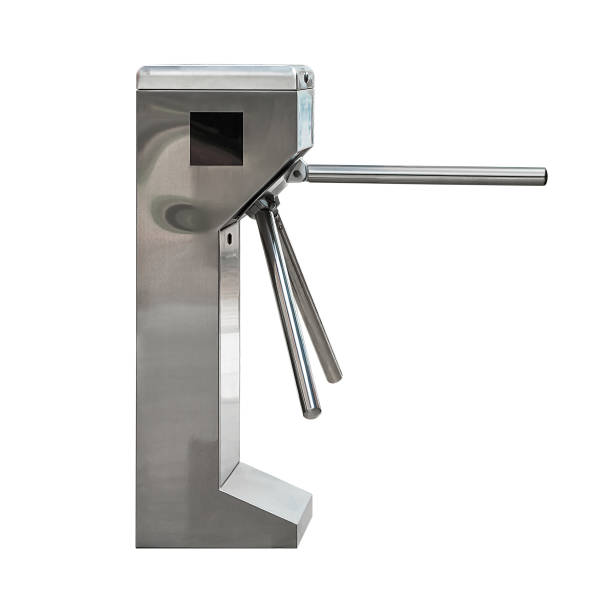
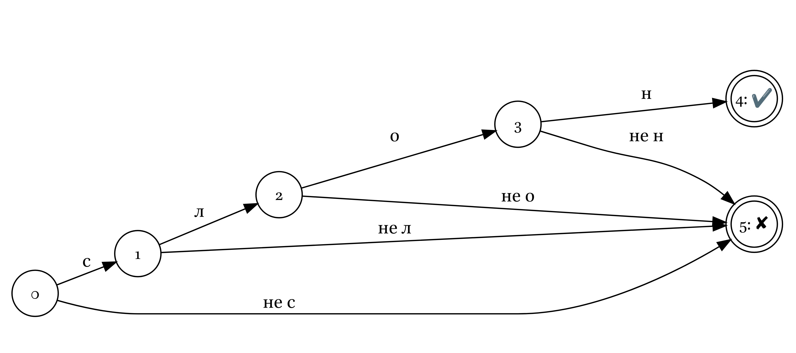
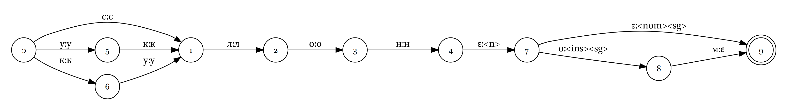
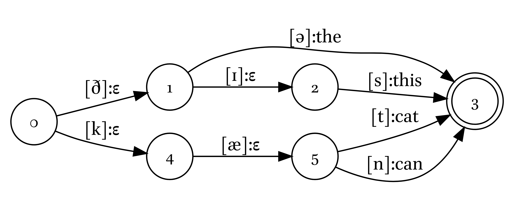

1 Автоматический морфологический анализ
Морфологический анализ, как его обычно видят лингвисты, обычно включает в себя несколько вещей:
- определение морфологической формы (например, латинское mensam — acc.sg);
- приведение к начальной форме или основе (mensam — mensa, ж. р., первое склонение);
- перевод основы (mensam — ‘стол’).
В зависимости от целей люди делают акцент на разные аспекты морфологического анализа. Для многих NLP задач полезным является приведение к начальной форме, лингвистический корпусной анализ практически невозможен без заранее определенных морфологических форм, и все три необходимы для представления языкового материала в научной работе. Также стоит помнить, что для разных задач могут быть важны разные категории, например, лингвисты, когда приводят примеры, редко перечисляют несловоизменительную информацию (например, род для существительных), которая может быть важна в каких-то задачах.
1.1 Приведение к основе (stemming)
Достаточно широкое применение в ранюю эпоху NLP получили методы, которые позволяют привести словоформы к основе или квазиоснове. Эта процедура помогала уменьшить разнообразие форм в тексте, что облегчало поиск и извлечение информации. В работе (Singh и Gupta 2017) приводится целая классификация стемеров:
1.2 Много данных
Обычно, если много данных, люди используют нейросети. Для морфологического анализа русского языка их использовали в следующих работах (Arefyev, Gratsianova, и Popov 2018; Sorokin и Kravtsova 2018; Bolshakova и Sapin 2019a, 2019b, 2020; Garipov, Morozov, и Glazkova 2023). Используются разные архитектуры:
- cвёрточные нейронные сеть (convolutional neural network, CNN);
- деревья решения с градиентным бустингом (decision trees with gradient boosting);
- двунаправленная длинная цепь элементов краткосрочной памяти (Biderectional long short-term memory network, Bi-LSTM);
- и другие.
Другой важный проект, который можно упомянуть в этом разделе: UDPipe — проект, основанный на размеченных в формате Universal Dependencies трибанках большого количества языков (Straka 2018). Отметим, что их задача амбициознее: они строят модель, совмещающую морфологический парсер и синтаксический парсер дерева зависимостей. Внутри: длинная цепь элементов краткосрочной памяти (LSTM), которая работает на основе векторного представления слов.
Также стоит упомянуть проект Morfessor, в котором используют скрытые марковские цепи (HMM) (Grönroos и др. 2014).
1.3 Другие правиловые подходы
Стоит отметить, что существуют не основанные на трансдьюсерах правиловые подходы, например,
- проект
uniparser-morphТимофея Архангельского (Архангельский 2012); - нечто, что работает в SIL Fieldworks;
- множество узконаправленных парсеров, написанных для конкертных языков.
1.4 От автоматов к морфологическим трансдьюсерам
1.4.1 Конечные автоматы
Теория автоматов — это дисциплина на стыке математики и компьютерных наук, которая появилась в XX веке. Первые конечных автоматов были предложены в работах (Mealy 1955; Moore 1956). Данный раздел основан на первой главе из (Beesley и Karttunen 2003: 1–42).
Под автоматами мы понимаем абстрактные машины, которые принимают разные состояния, а изменение состояний вызывается некоторым действием:




Мы не будем давать формального определения конечных автоматов, а перечислим его составляющие:
- алфавит, который автомат понимает;
- конечное количество состояний;
- переходы между состояниями;
- одно начальное состояние (часто обозначют нулем);
- набор конечных состояний (часто обозначают двойным кружочком).
Конечные автоматы можно использовать для побуквенной верефикации поданных на вход слов:

Если программа смогла пройти путь до конечного состояния (обозначен двойным кружочком), значит операция завершилась успехом, в остальных случаях — неудачей. Обычно путь, ведущий к неудаче, не отображают.

Можно сделать так, чтобы автомат верефицировал несколько слов:

Полученный автомат можно оптимизировать, так, чтобы там было меньше узлов, а задачи он решал те же самые:

Различают детерминированные и недетерминированные конечные автоматы. Последние отличаются от первых тем, что не выполняют одно из следующих требований:
- любой переход единственным образом определяется по текущему состоянию и входному символу;
- чтение входного символа требуется для каждого изменения состояния.
Существуют математические работы, доказывающие, что для любого регулярного языка существует детерминированный конечный автомат с наименьшим возможным числом состояний. Такой автомат единственен с точностью до изоморфизма. Нам это важно как знание, что наши лингвистические автоматы можно оптимизировать.
Важно отметить, что в данном разделе наши автоматы были представлены диаграммами состояний, однако автомат можно представить и в виде таблицы переходов, в которой каждая строка соотвествует одному состоянию, а столбцу допустимый входной символ (и выходной, если речь о трансдьюсерах, см. ниже). Данный формат еще называют ATT. Дополнительный столбец может соответсвовать столбцу весов.
| исходное состояние | следующее состояние | входной символ |
|---|---|---|
| 0 | 1 | с |
| 1 | 2 | л |
| 2 | 3 | о |
| 3 | 4 | н |
| 0 | 5 | у |
| 5 | 1 | к |
| 0 | 6 | к |
| 6 | 1 | у |
То же самое, записанное в формате БНФ (Бэкусовская нормальная форма или Бэкуса-Науэра форма):
0::с1|у5|к6
1::л2
2::о3
3::н4
5::к1
6::у11.4.2 Трансдьюсеры
Всё, что мы рассмотрели до этого момента, позволяло лишь принимать/отвергать слова, поданные на вход. Если мы немного усложним автомат, добавив в него еще выходной алфавит, то мы получим трансдьюсер (в русской википедии они названы конечными автоматами с выходом). Мы будем использовать обновленную нотацию: то, что представлено на вход, мы пишем слева от двоеточия, а то, что получается на выходе — справа.

В добавку к проверке наших слов, которое обеспечивалось конечными автоматами, мы получаем нечто на выходе. Пока в нашем примере на выходе получается то же самое, что на входе. Пустую строку принято обозначать греческой буквой эпсилон: ε. Таким образом мы можем представить трансдьюсер, который, наконец-то, делает некоторый морфологический анализ.

| вход | выход |
|---|---|
| слон | слон<n><nom><sg> |
| слоном | слон<n><ins><sg> |
| уклон | уклон<n><nom><sg> |
| уклоном | уклон<n><ins><sg> |
| кулон | кулон<n><nom><sg> |
| кулоном | кулон<n><ins><sg> |
Важно также отметить, что вообще-то не обязательно что-то делать на каждом этапе. Можно сделать трансдьюсер, который по духу будет автоматом, но дойдя до некоторого состояния, будет выдавать лэйбл.

Лингвистические трансдьюсеры можно использовать для
- морфологического анализа
- транслитерации/транскрипции
- предиктивного ввода
- в системах проверки правописания
- в системах автоматического перевода близкородственных языков
- в системах распознавания речи
- и др.
С трансдьюсерами можно делать много разных операций:
- объединение (конечные и начальные состояния совпадают, все промежуточные сохраняются);
- конкатенация (конечное состояние одного трансдьюсера становится начальным состоянием другого);
- пересечение (в особых случаях;
- вычитание (в особых случаях);
- композиция (обсудим ниже).
Композиция трансдьюсеров аналогична функциям join для таблиц. После композиции трансдьюсера <x, y> и <y, z> получается новый трансдьюсер <x, z>.

Именно при помощи композиции трансдьюсеров можно объединять трансдьюсеры с разными “целями”: например, трансдьюсер, который приводит к начальной форме и пишет морфологические теги, с трансдьюсером, который переводит основы. Кроме того, бывают взвешенные трансдьюсеры, в которых каждому переходу в новое состояние приписывается некоторый вес. Такой трансдьюсер позволяет не просто получать возможные варианты, но и ранжировать их, что важно при создании спеллчекеров.
Закончим перечислением преимуществ трансдьюсеров. Оптимизированный трансдьюсер оптимален с точки зрения объема требуемой памяти для хранения и скорости поиска. Композиция трансдьюсеров открывает большой и богатый мир, позволяет создавать и комбинировать между собой очень разные инструменты.
1.5 Проблемы моделирования морфологии языка
- Проблема описаний:
- неполнота: то, что исследователи посчитали достаточным для грамматического описания, может быть недостаточно для моделирования; для некоторого языка может быть доступно грамматическое описание, но отсутствовать словарь и наоборот; словарь может не содержать информации про словоизменительный класс каких-то единиц, которые различаются в грамматическом описании.
- противоречивые источники: грамматические описания могут противоречить друг другу; грамматические описания могут противоречить словарям
- Проблема вариативности:
- идиолектная
- диалектная
- связанная с какими-нибудь социолингвистическими параметрами (в первую очередь такие как пол и возраст, но можно придумать и другие)
- Проблема неоднозначности (особенно перекошенной частотно):
- лексической
- морфологическая
- синтаксическая
- …
- Проблема идиом и суплетивизма: в какой форме стоит глагол в ругательстве ** твою мать?
- Проблема циклов, возникающих при словообразовании:
- слуга (N) > служить (V) > услужить (V) > услужение (N), услуга (N)1
- Проблема морфологической сложности: для языков с бедной морфологией проще строить прсотой правиловый морфологический парсер, а не трансдьюсер
- Технические сложности: весь софт для создания морфологических трансдьюсеров пишут под Linux, за исключением может быть пакета
hfst-devдля Python - Не так просто работать совместно над одним проектом, чаще всего лучше иметь двух людей — специалиста по языку, и специалиста по трансдьюсерам.
Смотрите еще обсуждения на FST в работе (Wintner 2008).
Я лишь предполагаю такую историческую деревацию, возможно, этимологии этих слов таят в себе значительно более сложную историю.↩︎